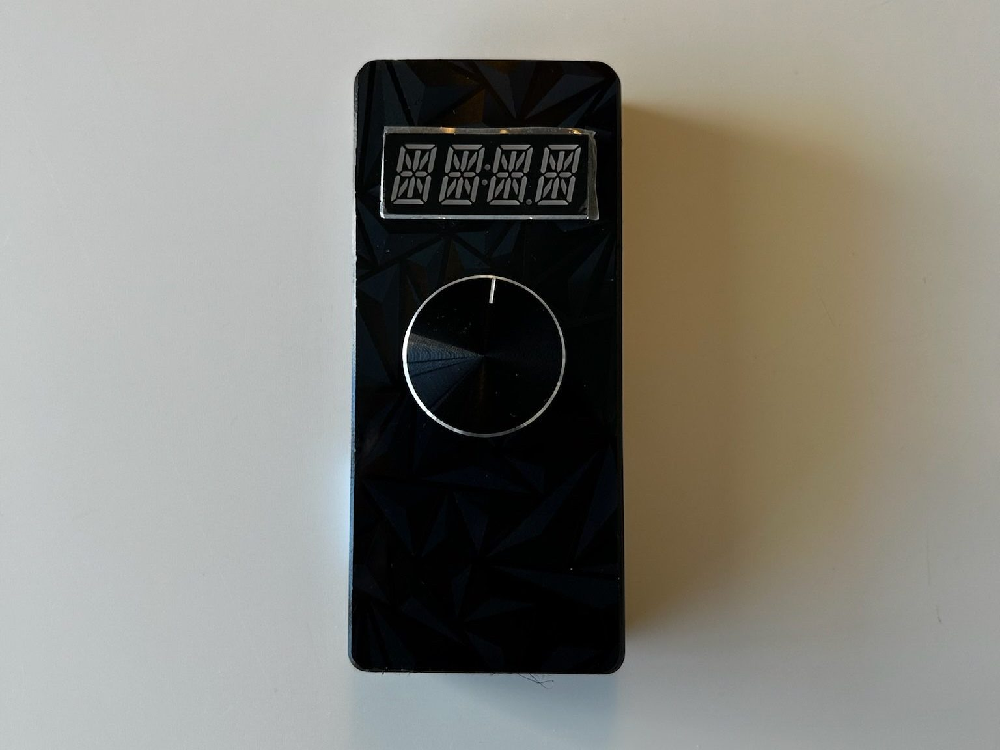
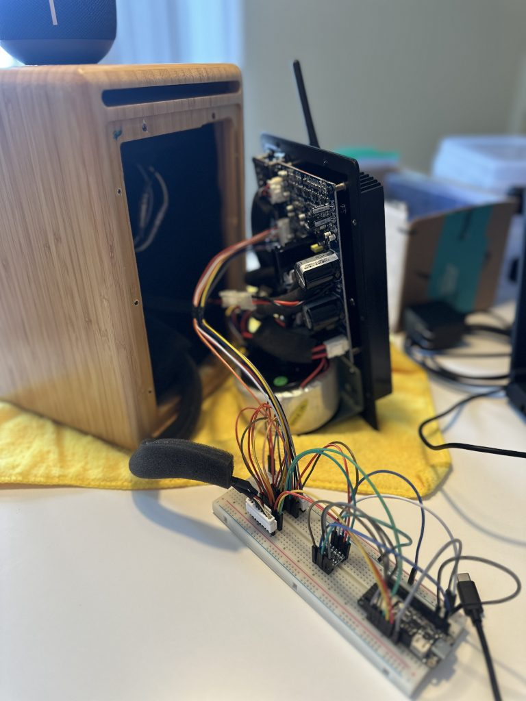

IoT Remote
This project involved designing and building a custom wireless remote control system for the Audioengine A5+ speaker set, which no longer ships with a replaceable infrared remote. Our solution replaces the original IR interface with an ESP32-based IoT system that enables real-time, bidirectional communication between a 3D-printed handheld remote and a custom controller embedded within the speaker.
The remote features a rotary encoder for volume and mute control, a low-power alphanumeric display, and an integrated sleep mode that significantly reduces power draw during inactivity. As a result, the device only needs to be recharged every few months under normal use. The speaker-side controller intercepts and emulates encoder signals to adjust volume via GPIO, preserving full compatibility with the original analog control circuit. Communication between the devices is handled over Wi-Fi using a custom message protocol with input queuing for reliability.
Key engineering challenges included reverse-engineering the speaker’s internal control logic, implementing robust low-power firmware, and ensuring seamless synchronization between physical and digital volume states. The final system offers a sleek, modern, and highly functional replacement for the original remote, with improved durability and user experience.

Fig 1:Debugging of reciever firmware using a breadboard